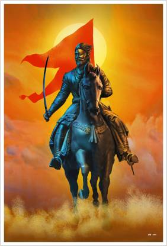

Shivaji carved out an enclave from the declining Adilshahi sultanate of Bijapur that formed the genesis of the Maratha Empire. In 1674, he was formally crowned the Chhatrapati (emperor) of his realm at Raigad. Shivaji demonstrated great skill in creating his military organisation, which lasted until the demise of the Maratha empire. His strategy rested on leveraging his ground forces, naval forces, and series of forts across his territory. The Maval infantry served as the core of his ground forces (reinforced with Telangi musketeers from Karnataka), supported by Maratha cavalry. His artillery was relatively underdeveloped and reliant on European suppliers, further inclining him to a very mobile form of warfare.
